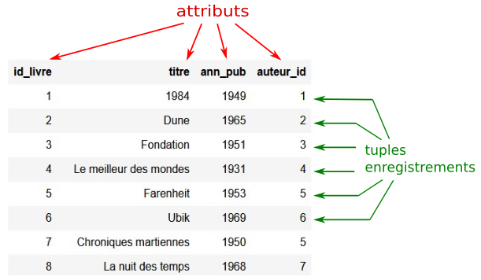
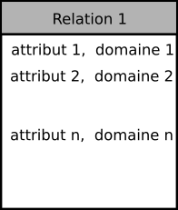

Le modèle relationnel#
Les données en table#
Une table est un tableau comprenant des données réparties sur plusieurs colonnes et lignes.
Chaque colonne est désignée par un nom appelé attribut.
Chaque ligne est un enregistrement ou tuple de la table possédant des valeurs.
Exemple
Dans l’activité, nous avons traiter les données d’une table rassemblant des informations sur des romans de science-fiction.
Titre |
nom_auteur |
prénom_auteur |
naissance_auteur |
langue |
année_publication |
genre |
|---|---|---|---|---|---|---|
1984 |
Orwell |
George |
1903 |
anglais |
1949 |
[“totalitarisme”, “science-fiction”, “anticipation”, “dystopie”] |
Dune |
Herbert |
Frank |
1920 |
anglais |
1965 |
[“science-fiction”, “anticipation”] |
Fondation |
Asimov |
Isaac |
1920 |
anglais |
1951 |
[“science-fiction”, “économie”] |
Le meilleur des mondes |
Huxley |
Aldous |
1894 |
anglais |
1931 |
[“totalitarisme”, “science-fiction”, “dystopie”] |
Farenheit 451 |
Bradbury |
Ray |
1920 |
anglais |
1953 |
[“science-fiction”, “dystopie”] |
Ubik |
K Dick |
Philip |
1928 |
anglais |
1969 |
[“science-fiction”, “anticipation”] |
Chroniques martiennes |
Bradbury |
Ray |
1920 |
anglais |
1950 |
[“science-fiction”, “anticipation”] |
La nuit des temps |
Barjavel |
René |
1911 |
français |
1968 |
[“science-fiction”, “tragédie”] |
Blade runner |
K Dick |
Philip |
1928 |
anglais |
1968 |
[“intelligence artificielle”, “science-fiction”] |
Les robots |
Asimov |
Isaac |
1920 |
anglais |
1950 |
[“science-fiction”, “intelligence artificielle”] |
La planète des singes |
Boulle |
Pierre |
1912 |
français |
1963 |
[“science-fiction”, “dystopie”] |
Ravage |
Barjavel |
René |
1911 |
français |
1943 |
[“dystopie”, “uchronie”] |
Le monde des A |
Van Vogt |
Alfred Elton |
1912 |
anglais |
1945 |
[“science-fiction”, “intelligence artificielle”] |
La fin de l’éternité |
Asimov |
Isaac |
1920 |
anglais |
1955 |
[“science-fiction”, “voyage dans le temps”] |
De la terre à la lune |
Verne |
Jules |
1828 |
français |
1865 |
[“science-fiction”, “aventure”] |
La machine à explorer le temps |
Wells |
Herbert George |
1866 |
anglais |
1895 |
[“science-fiction”, “voyage dans le temps”] |
Les attributs de cette table sont le titre du roman, le nom, le prénom et l”année de naissance de son auteur, la date de publication, la langue d’écriture et le genre du roman.
Inconvénients liés au modèle
Dans ce type de modèle, plusieurs inconvénients peuvent se poser:
La table contient des informations redondantes parfois même en doublon si aucun traitement préalable n’est effectué. Par exemple, l’auteur Bradbury apparait 2 fois !
Si on souhaite extraire les romans écrits en langue française, il est nécessaire de parcourir toute la table pour les obtenir. Le traitement devient peu efficace.
La saisie d’un enregistrement supplémentaire peut contenir des données déjà existantes et peuvent amener des différences comme l’orthographe d’un nom ce qui impliquera des résultats de recherche incomplets.
une table comme celle-ci, mise à dispositon sur un serveur sera accessible en lecture. Mais sa modification par plusieurs personnes peut poser des problèmes d’accès concurents et rendre la ressource indisponible.
D’autres problèmes liés au modèle existent, la liste n’est pas exhaustive. Cela nous conduit à réfléchir à un modèle qui évite ces inconvénients. Un modèle relationnel peut corriger la plupart de ces inconvénients.
Le modèle relationnel#
Le modèle relationnel repose sur la décomposition d’une table en plusieurs tables, plus petites, évitant la redondance des données. Ces différentes tables sont alors appelées relations.
Une relation regroupe un ensemble de données homogènes et se présente sous forme de tableau dont les données sont classées en colonnes.
Chaque colonne d’une relation est appelée attribut et caractérise une propriété;
Chaque ligne d’une relation est appelée un tuple ou un enregistrement.
Le modèle relationnel suit certaines règles qui assurent le bon fonctionnement de celui-ci. Ses règles sont appelées des contraintes d’intégrité:
les attributs sont uniques dans une même relation.
les enregistrements d’une relation sont uniques, pas de doublon.
les valeurs d’un attribut sont du même type pour tous les enregistrements.
des valeurs limites peuvent être définies pour les attributs, elles constituent le domaine de l’attribut.
les valeurs des enregistrements appartiennent nécessairement aux domaines définis dans la relation.
Exemple
La relation livre donnée ci-dessous contient 4 attributs et 8 tuples (enregistrements).
{kind=link}
le domaine de valeurs de l’attribut titre est une chaîne de caractères dont la longueur peut être limitée à 256 caractères;
le domaine de valeurs de l’attribut ann_pub est un nombre entier positif correspondant à une année.
Base de données
Une base de données est constituée de plusieurs relations reliées entre elles.
Un enregistrement de la table initiale se trouve dispersé sur plusieurs relations. Pour reformer cet enregistrement avec nos différentes relations, cela implique des liaisons entre les différentes relations.
Pour ce faire, on définit dans les différentes relations des clés primaires et des clés étrangères.
une clé primaire est associée à chaque tuple (enregistrement) et assure son unicité. Cette clé peut être un attribut de la relation dont on sait que la valeur est unique ou alors un attribut spécialement dédié à cette tâche.
une clé étrangère d’une relation prend la valeur d’une clé primaire d’une autre relation. Cette clé assure alors le lien entre les deux relations.
Schéma relationnel
Un schéma relationnel est une description des différentes relations de la base de données comprenant:
le nom de chaque relation;
les attributs de chaque relation avec leurs domaines de valeurs;
la mise en évidence des clés primaires et étrangères
les liens entre les différentes relations
Une relation dans un schéma relationnel peut se présenter sous la forme d’une description ou bien d’un diagramme:
Par une description : Relation 1 (attribut_1 Domaine_1, attribut_2 Domaine_2,… , attribut_n Domaine_n)
Par un diagramme :

{kind=link}
Exemple
Le modèle relationnel associé à la table contenant les différents romans de science-fiction est le suivant:

Sur le schéma relationnel, on distingue:
les 5 relations de notre modèle, base de données;
les attributs et leurs domaines pour chaque relation;
les clés primaires de chaque relation encadrées en rouge;
les clés étrangères soulignées en bleu
les liaisons entre les relations grâce aux clefs étrangères.